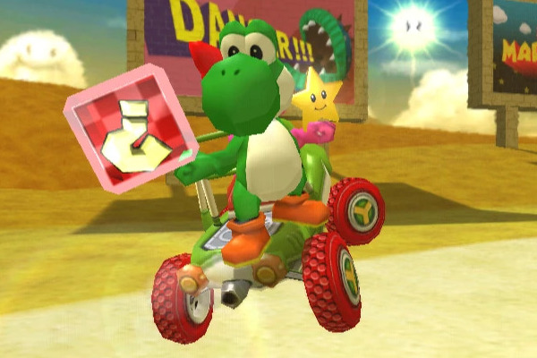

Yoshi the Creature
Yoshi is a cheerful, egg-laying dinosaur who often helps Mario by giving him rides and using his
tongue to gobble enemies. He’s known for his cute voice, green color, and loyalty.

Shigeru Miyamoto always wanted Mario to ride a dinosaur, but Yoshi wasn’t possible until the SNES hardware could handle him in Super Mario World. His design was inspired by a mix of dinosaurs and friendly cartoon animals.
Yoshi became so beloved he starred in his own series, like Yoshi’s Island and Yoshi’s Crafted World. He’s a fan favorite across generations for his charm and gameplay versatility.

Quotes (Almost all of these are from some show from the 90s or smth):
placeholder
placeholder
placeholder